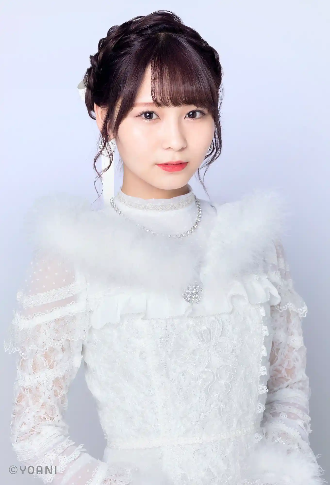

ホーム
楽曲一覧
=LOVE
僕らの制服クリスマス
手遅れcaution
Want you！Want you！
探せ ダイアモンドリリー
ズルいよズルいね
CAMEO
青春“サブリミナル”
全部、内緒
ウィークエンドシトロン
The 5th
あの子コンプレックス
Be Selfish
この空がトリガー
ナツマトペ
ラストノートしか知らない
呪って呪って
絶対アイドル辞めないで
見なくて良い
The 5th
The 5th
Poison Girl
お姫様にしてよ！
BPM170の君へ
大谷 映美里

大場 花菜
音嶋 莉沙
齋藤 樹愛羅
齊藤 なぎさ
佐々木 舞香
髙松 瞳
瀧脇 笙古
野口 衣織
諸橋 沙夏
山本 杏奈
ギャラリー